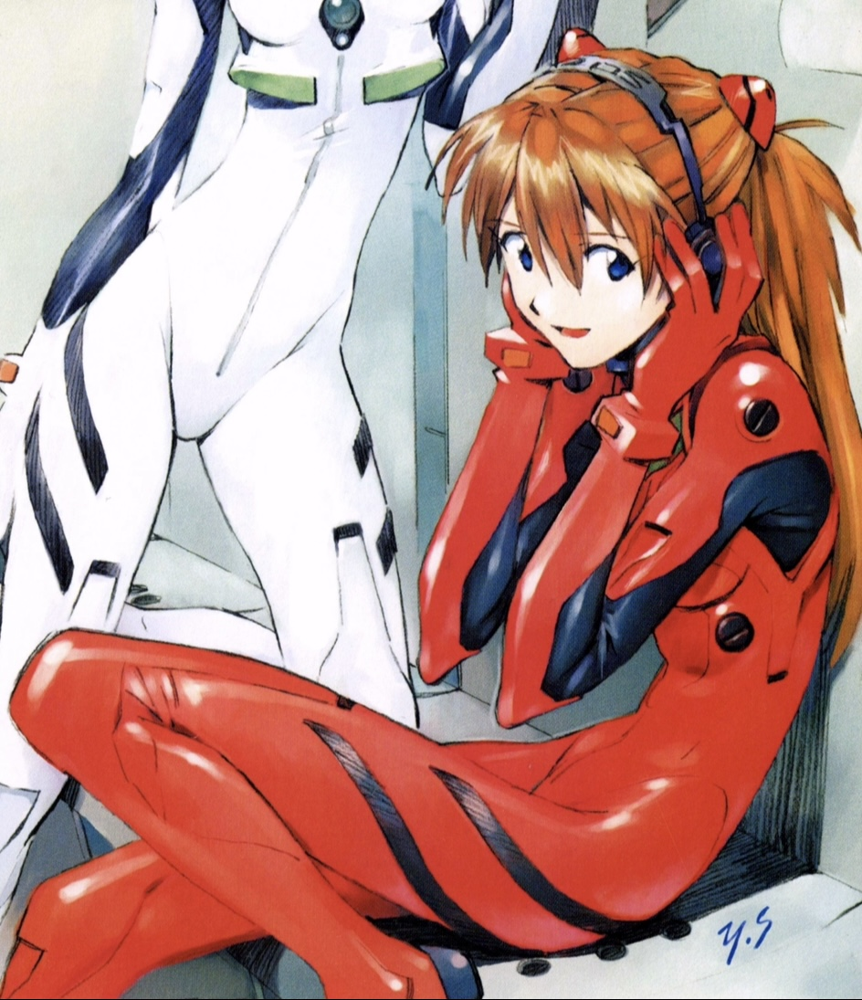

+ Asuka Langley +
Summary
Dynamic and highly skilled pilot with a proven track record of exceptional performance in high-pressure situations. Adept at operating advanced mechs and executing complex combat strategies to ensure mission success. Possessing a strong sense of leadership and resilience, I thrive in challenging environments and contribute to team cohesion. My background in psychological assessment and understanding of human behavior enhances my ability to navigate intricate interpersonal dynamics. Seeking a role where my unique skill set, determination, and adaptability can make a significant impact.
Education
- Tokyo-3 Military Academy, Evangelion Pilot Training Program
- Bachelor of Science in Engineering, University of Tokyo
- High School Diploma, Tokyo-3 High School
Work Experience
- Evangelion Pilot, NERV Organization, Tokyo-3 (Ongoing)
- Pilot advanced Evangelion units in defense of humanity against mysterious and powerful entities.
- Execute complex combat maneuvers and strategies in high-pressure situations.
- Collaborate with a diverse team of pilots, technicians, and strategists to ensure mission success.
Skills
- Advanced Mecha Piloting: ★★★★★
- Critical Thinking: ★★★★★
- Communication Skills: ★★★★★
Other
My Hobbies!
Contact Info